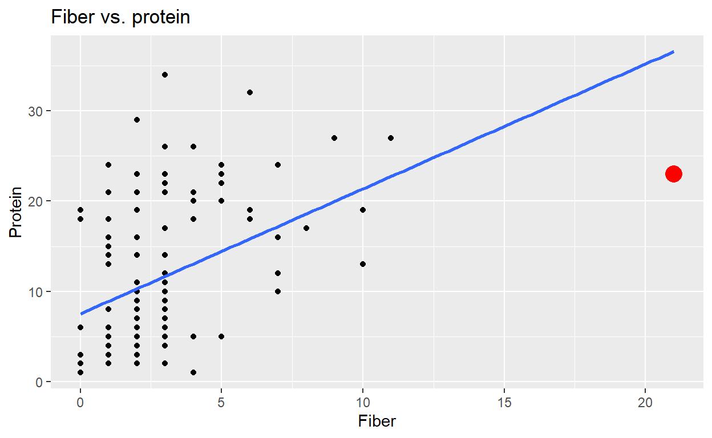
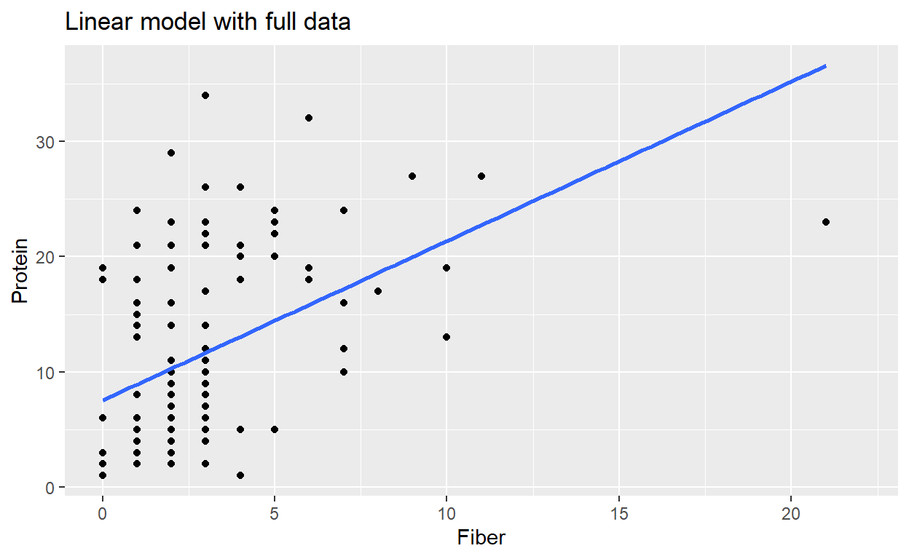

Introduction
Learning Objectives
By the end of this tutorial, you will be able to:
- Identify the four LINE conditions for linear regression
- Create and interpret residual plots to assess model assumptions
- Recognize violations of technical conditions in data visualizations
- Understand the impact of outliers on regression inference
- Apply appropriate transformations to address assumption violations
Technical Conditions in linear regression
Additionally, you will consider the technical conditions that are important when using linear models to make claims about a larger population.
Technical conditions for linear regression
In the previous lesson you saw that sometimes the mathematical model was not appropriate for inferential analysis (that is, for calculating p-values and confidence intervals). In this lesson, we’ll provide details for when the mathematical model is appropriate.
What are the technical conditions?
When we fit a linear regression model, we assume the data follow this structure:
\[Y = \beta_0 + \beta_1 \cdot X + \epsilon\] \[\epsilon \sim N(0, \sigma_\epsilon)\]
For valid statistical inference (accurate p-values and confidence intervals), four conditions must be met - remembered by the acronym LINE:
- Linear relationship between X and Y
- Independent observations
- Normally distributed residuals around the line
- Equal variability (homoscedasticity) around the line for all X values
Why do these matter? If these conditions are violated, our p-values and confidence intervals may be misleading, potentially causing us to draw incorrect conclusions about relationships in our data.
Because your goal in this tutorial is to perform inferential calculations on the linear regression model, it is important that the sampling distribution for the estimated slope has the expected form. That is, we will be able to apply our methods only if the points are linear, independent, normally distributed, and have equal variability around the line. Note that the conditions are given by the linear model equation as well as spelled out using the LINE mnemonic.
If the sampling distribution isn’t accurate, the p-values and confidence intervals that you calculate could be wrong.
Linear model: residuals
linear_lm <- augment(
lm(response ~ explanatory,
data = lineardata)
)
ggplot(linear_lm,
aes(x = .fitted,
y = .resid)) +
geom_point() +
geom_hline(yintercept=0)fitted value: \(\hat{Y}_i = b_0 + b_1 X_i\)
residual: \(e_i= Y_i - \hat{Y}_i\)
The augment function in the broom
package calculates the fitted and residual values for every point in the
dataset. The output of the augment function defaults to
.fitted and .resid.
If the linear model is appropriate, a plot of the residuals versus the fitted values should show a non-patterned scattering of the points. The fitted model is usually described by Roman letters (b0 and b1), whereas the population model we want to find is described by Greek letters (beta0 and beta1).
The residual plot here (fitted value plotted on the x-axis, residual values plotted on the y-axis) shows a scattering of points which do not indicate any violation of the regression technical conditions.
How to Read a Residual Plot
A good residual plot shows: * Random scatter of points with no pattern * Points roughly centered around the horizontal line at y = 0 * Consistent spread across all fitted values
Warning signs to look for: * Curved patterns → nonlinearity * Funnel shapes → unequal variance * Asymmetric spread → many problems (non-normality)
Not linear
\[Y = \beta_0 + \beta_1 \cdot X + \epsilon\]
\[\epsilon \sim N(0, \sigma_\epsilon)\]
- L: linear model
- I: independent observations
- N: points are normally distributed around the line
- E: equal variability around the line for all values of the explanatory variable
The plot here demonstrates a clear violation of the linear model. The variables have a quadratic relationship, not a linear one!
Not linear: residuals
nonlinear_lm <- augment(
lm(response ~ explanatory, data = nonlineardata)
)
ggplot(nonlinear_lm,
aes(x = .fitted, y = .resid)) +
geom_point() +
geom_hline(yintercept=0)
fitted value: \(\hat{Y}_i = b_0 + b_1 X_i\)
residual: \(e_i= Y_i - \hat{Y}_i\)
The residuals associated with the quadratic model also look curved. For the technical conditions to hold, you need a non-patterned scattering of points. Just like the original scatter plot, the residual plot with fitted value on the x-axis, and residual on the y-axis continues to demonstrates a violation of the linear technical condition.
Not normal
\[Y = \beta_0 + \beta_1 \cdot X + \epsilon\]
\[\epsilon \sim N(0, \sigma_\epsilon)\]
- L: linear model
- I: independent observations
- N: points are normally distributed around the line
- E: equal variability around the line for all values of the explanatory variable
The violation here is not as obvious as the non-linear violation. In this plot, the points are not normally distributed around the line. That is, although the residuals are centered at zero, the points under the line are closer to the line and the points above the line are scattered farther from the line.
Not normal: residuals
nonnormal_lm <- augment(
lm(response ~ explanatory, data = nonnormaldata)
)
ggplot(nonnormal_lm,
aes(x = .fitted, y = .resid)) +
geom_point() +
geom_hline(yintercept = 0) fitted value: \(\hat{Y}_i = b_0 + b_1 X_i\)
residual: \(e_i= Y_i - \hat{Y}_i\)
The residual plot makes it even easier to see the violation of the technical condition related to normality. If the residuals were normally distributed around the line, they would be equally far from the line in the positive and negative direction. Here, the points below the line do not spread out nearly as far as the points above the line.
Not equal variance
\[Y = \beta_0 + \beta_1 \cdot X + \epsilon\]
\[\epsilon \sim N(0, \sigma_\epsilon)\]
- L: linear model
- I: independent observations
- N: points are normally distributed around the line
- E: equal variability around the line for all values of the explanatory variable
The last violation we will investigate is unequal variability across different values of the explanatory variable. In this plot, it seems as though the Y values associated with small X are quite close to the line whereas Y values associated with large values of X have a much larger variability around the line.
Not equal variance: residuals
nonequal_lm <- augment(
lm(response ~ explanatory, data = nonequaldata)
)
ggplot(nonequal_lm,
aes(x = .fitted, y = .resid)) +
geom_point() +
geom_hline(yintercept = 0)fitted value:
\(\hat{Y}_i = b_0 + b_1 X_i\)
residual:
\(e_i= Y_i - \hat{Y}_i\)
Once again, the residual plot accentuates the technical condition violation by demonstrating the increasing variability of the residuals around the line as the fitted value increases.
As mentioned previously, meeting the technical conditions will help to ensure that your p-values and confidence interval estimates are an accurate reflection of your population values. Up soon, you will practice transforming data so as to meet the conditions. But for now, it is your turn to practice determining when the technical conditions have been met.
Violation of LINE conditions (1)
Which of the linear regression technical conditions are violated in the given figure?
Hint: These data do violate one of the technical conditions for linear regression.
Violation of LINE conditions (2)
Which of the linear regression technical conditions are violated in the given figure?
Hint: These data do violate one of the conditions for linear regression. Look at the spread of the points around the line.
Moving from Theory to Practice
Now that you understand what violations look like, let’s practice identifying them in real data. In the next exercises, you’ll analyze residual plots and determine which LINE conditions are violated.
Using residuals (1)
Goal: Practice creating residual plots to check LINE conditions.
When conditions are met, residual plots show random scatter with no discernible pattern. Let’s see what this looks like with good data.
Step 1: First, visualize the relationship Using
hypdata_nice, draw a scatter plot of response
versus explanatory.
In the next few exercises, you will calculate residuals from a data set that complies with the linear regression technical conditions. For the linear model conditions to hold, the points should be scattered throughout the residual plot with no discernible pattern. Here, the residual plot looks like a scattering of points.
Using hypdata_nice, draw a scatter plot of
response versus explanatory.
# Using hypdata_nice, draw a scatter plot of response vs. explanatory
___- Call `ggplot()` with `hypdata_nice` as the data.
- Inside `aes()`, map `x` to `explanatory` and `y` to `response`.
- Add `geom_point()`.# Using hypdata_nice, draw a scatter plot of response vs. explanatory
ggplot(hypdata_nice, aes(x = explanatory, y = response)) +
geom_point()Step 2: Now check the residuals
- Run a linear regression of
responseversusexplanatoryonhypdata_nice. - Get the observation-level information from the model using
augment. - Using
modeled_observations, plot.residvs..fittedand add a point layer.
# Run a linear regression of response vs. explanatory
model <- ___
# Augment to get the observation-level information
modeled_observations <- ___
# See the result
modeled_observations
# Using modeled_observations, draw a scatter plot of .resid vs. .fitted
___- Call `lm()`, modeling `response` versus `explanatory` and setting the data to `hypdata_nice`.
- Call `augment()` to get the observation-level information from the model.
- Use `modeled_observations` as `ggplot()`'s data argument. Inside `aes()`, map `x` to `.fitted` and `y` to `.resid`.
- Add `geom_point()`.# Run a linear regression of response vs. explanatory
model <- lm(response ~ explanatory, data = hypdata_nice)
# Augment to get the observation-level information
modeled_observations <- augment(model)
# See the result
modeled_observations
# Using modeled_observations, draw a scatter plot of .resid vs. .fitted
ggplot(modeled_observations, aes(x = .fitted, y = .resid)) +
geom_point()Using residuals (2)
Now, you will calculate residuals from a data set that violates the technical conditions. For the linear model conditions to hold, the points should be scattered throughout the residual plot with no discernible pattern. Here the residuals reveal a violation of the technical conditions.
Using hypdata_poor, draw a scatter plot of
response versus explanatory.
# Using hypdata_poor, draw a scatter plot of response vs. explanatory
___- Call `ggplot()` with `hypdata_poor` as the data.
- Inside `aes()`, map `x` to `explanatory` and `y` to `response`.
- Add `geom_point()`.# Using hypdata_poor, draw a scatter plot of response vs. explanatory
ggplot(hypdata_poor, aes(x = explanatory, y = response)) +
geom_point()- Run a linear regression of
responseversusexplanatoryonhypdata_poor. - Get the observation-level information from the model using
augment. - Using
modeled_observations, plot residuals vs. fitted values and add a point layer.
# Run a linear regression of response vs. explanatory
model <- ___
# Augment to get the observation-level information
modeled_observations <- ___
# See the result
modeled_observations
# Using modeled_observations, draw a scatter plot
# of residuals vs. fitted values
___- Call `lm()`, modeling `response` versus `explanatory` and setting the data to `hypdata_poor`.
- Call `augment()` to get the observation-level information from the model.
- Use `modeled_observations` as `ggplot()`'s data argument. Inside `aes()`, map `x` to `.fitted` and `y` to `.resid`.
- Add `geom_point()`.# Run a linear regression of response vs. explanatory
model <- lm(response ~ explanatory, data = hypdata_poor)
# Augment to get the observation-level information
modeled_observations <- augment(model)
# See the result
modeled_observations
# Using modeled_observations, draw a scatter plot
# of residuals vs. fitted values
ggplot(modeled_observations, aes(x = .fitted, y = .resid)) +
geom_point()Why do we need the LINE assumptions?
So far, you have implemented two approaches for performing inference
assessment to a linear model. The first way is given by the standard R
output (lm) and is based on the t-distribution. The
derivation of the t-distribution is based on the theory (i.e., the LINE
conditions).
The second method uses a randomization test which assumes that the observations are exchangeable under the null hypothesis. That is, when the null hypothesis (X is independent of Y) is true, the Y values can be swapped among the X values. The technical conditions in the randomization setting are linear relationship, independent observations, and equal variances. However, the normality assumption is not needed.
What happens if inferences is performed when the technical conditions are violated?
Hint: More than one thing can go wrong when the technical conditions for regression are violated.
Effect of Outliers on Regression
Why Outliers Matter
A single unusual observation can dramatically affect: * The slope and intercept of the regression line * The p-value for testing significance * Our confidence in the model’s predictions
Important principle: Never remove outliers just because they don’t fit your model. Only remove observations when: 1. They represent data entry errors 2. You’re deliberately modeling a specific subset of your data (and you clearly report this decision)
Let’s see the impact of outliers using the Starbucks nutrition data.
Just as violating technical conditions can impact the accuracy of a p-value, one or a handful of outlying values can also have an unintended impact on the regression inferential procedure.

Recall the linear model regressing protein on fiber. You may have noticed previously that there was one food item with quite a bit of fiber and relatively little protein.
Additionally, maybe it turns out that you’d like to model only foods with relatively low fiber. That is, if we remove the high fiber food, we can create a linear model which describes the relationship between fiber and protein only for foods that have less than 15g of fiber.
Different regression lines

The decision of whether or not to keep the high fiber food will have an impact on the regression line describing the relationship between protein and fiber. Notice that by removing the the outlier, the regression line changes from the original least squares estimate.
Different regression lines
The two regression lines have been superimposed so that the change in relationship is easier to see. Keep in mind that the red line models foods with less than 15g of fiber because we have subsetted the explanatory variable. We would never remove a data point simply because it didn’t fit a particular model, we only remove the point if we are interested in describing only a subset of the observations.
Different regression models
starbucks_lowFib <- starbucks |> filter(Fiber < 15)
lm(Protein ~ Fiber, data = starbucks) |> tidy()
# term estimate std.error statistic p.value
# 1 (Intercept) 7.526138 0.9924180 7.583637 1.101756e-11
# 2 Fiber 1.383684 0.2451395 5.644476 1.286752e-07
lm(Protein ~ Fiber, data = starbucks_lowFib) |> tidy()
# term estimate std.error statistic p.value
# 1 (Intercept) 6.537053 1.0633640 6.147521 1.292803e-08
# 2 Fiber 1.796844 0.2995901 5.997675 2.600224e-08In this code, we use the original dataset as well as the dataset which is filtered to include only values for which Fiber is less than 15. The linear model is given for both datasets.
As expected, the values of the slope and intercept change depending on which data values are included in their calculations. And although the p-value given for the statistical inference is statistically significant in both situations, the p-values are different by a factor of 5.
Different regression randomization tests
Full data set
perm_slope |> mutate(
abs_perm_slope = abs(stat)
) |>
summarize(
p_value = mean(
abs_perm_slope > abs(obs_slope)
)
)
# A tibble: 1 x 1
# p_value
# <dbl>
# 1 0Low fiber data set
perm_slope_lowFib |> mutate(
abs_perm_slope = abs(stat)
) |>
summarize(
p_value = mean(
abs_perm_slope >
abs(obs_slope_lowFib)
)
)
# A tibble: 1 x 1
# p_value
# <dbl>
# 1 0Similar to the mathematical analysis, the randomization test on the slope can be run for the full dataset or the low-fiber dataset. Again, both tests are well into the statistically significant range.
Estimation with and without outlier
Remember, never remove points from the dataset unless you know the observed value to be incorrect or unless you are modeling a subset of your explanatory variable.
The data provided in this exercise (hypdata_outlier) has
an extreme outlier. A plot is shown of the dataset, and a linear
regression model of response versus
explanatory. You will remove the outlying point to see how
one observation can affect the estimate of the line.
- Filter
hypdata_outlierto remove the outlier. - Update the plot,
p, to add another smooth layer (usegeom_smooth).- Like the other ribbon, the update should use the linear regression method, and not draw the ribbon.
- Unlike the other ribbon, the update should use the
data = hypdata_no_outlierand be colored red. - For now, just use the smooth curve, and not the confidence bounds
(
se = FALSE).
# This plot is shown
p <- ggplot(hypdata_outlier, aes(x = explanatory, y = response)) +
geom_point() +
geom_smooth(method = "lm", se = FALSE)
# Filter to remove the outlier
hypdata_no_outlier <- ___
p +
# Add another smooth lin .reg. layer, no ribbon,
# hypdata_no_outlier data, colored red
___- You can filter on `response` being less than `200`, for example.
- Add `geom_smooth()`, setting `method` to `"lm"`, `se` to `FALSE`, `data` to `hypdata_no_outlier`, and `color` to `"red"`.# This plot is shown
p <- ggplot(hypdata_outlier, aes(x = explanatory, y = response)) +
geom_point() +
geom_smooth(method = "lm", se = FALSE)
# Filter to remove the outlier
hypdata_no_outlier <- hypdata_outlier |>
filter(response < 200)
p +
# Add another smooth lin .reg. layer, no ribbon,
# hypdata_no_outlier data, colored red
geom_smooth(
method = "lm", se = FALSE,
data = hypdata_no_outlier, color = "red"
)Inference with and without outlier (t-test)
Not only can one point change the estimated regression line, but it can also change the inferential analysis.
The datasets with and without the outlier are provided as
hypdata_outlier and hypdata_no_outlier
respectively.
- Run a linear regression of
responsevs.explanatoryonhypdata_outlier, and extract the coefficient-level information. - Do the same for
hypdata_no_outlier. - Look at the output. How do the coefficients and p-values differ?
# Model response vs. explanatory on hypdata_outlier and tidy it
___
# Do the same on hypdata_no_outlier
___- Call `lm()`, modeling `response` vs. `explanatory`, for each dataset.
- Call `tidy()` on each model to get the coefficient-level information.# Model response vs. explanatory on hypdata_outlier and tidy it
tidy(lm(response ~ explanatory, data = hypdata_outlier))
# Do the same on hypdata_no_outlier
tidy(lm(response ~ explanatory, data = hypdata_no_outlier))Inference with and without outlier (randomization)
Using the randomization test, you can again evaluate the effect of an
outlier on the inferential conclusions of a linear model. Run a
randomization test on the hypdata_out data twice: once with
the outlying value and once without it. Note that the extended lines of
code communicate clearly the steps of the randomization tests.
Using the data frames hypdata_out (containing an
outlier) and hypdata_noout (outlier removed), the data
frames perm_slope_out and perm_slope_noout
were created to contain the permuted slopes the original datasets,
respectively. The observed values are stored in the variables
obs_slope_out and obs_slope_noout.
- Find the p-values by finding the proportion of (
absolute value) permuted slopes which are larger than or equal to the (absolute value of the) observed slopes. As before, usemeanon the binary inequality to find the proportion.
# Calculate the p-value with the outlier
perm_slope_out |>
mutate(abs_perm_slope = ___) |>
summarize(p_value = ___)
# Calculate the p-value without the outlier
perm_slope_noout |>
mutate(abs_perm_slope = ___) |>
summarize(p_value = ___)Repeat the same procedure twice and compare the p-values.# Calculate the p-value with the outlier
perm_slope_out |>
mutate(abs_perm_slope = abs(stat)) |>
summarize(p_value = mean(abs_perm_slope >= abs(obs_slope_out)))
# Calculate the p-value without the outlier
perm_slope_noout |>
mutate(abs_perm_slope = abs(stat)) |>
summarize(p_value = mean(abs_perm_slope >= abs(obs_slope_noout)))Moving forward when model assumptions are violated
Before we embark on what to do when the model technical assumptions are violated, I’d like to remind you that you won’t get accurate models or analyses if you remove outlying data points on a whim. If you want a model built on data that describes a population, you have to use all the data. In the previous example, however, we removed data values that were outside the range of interest. That is, we only considered points with fiber less than 15g. You removed points that were less than 4.6 in your hypothetical scenario — effectively subsetting the explanatory region that you describe. It will be important to explain such subsetting in the final analysis report.
Linear Model
\[Y = \beta_0 + \beta_1 \cdot X + \epsilon\]
where \(\epsilon \sim N(0, \sigma_\epsilon)\)
Recall the linear model that we’ve been working with. Note that X and Y have a linear relationship and the noise term gets added on. Also, recall that the noise values come from a normal distribution centered around zero. Transforming either the explanatory (X) or response (Y) variables will change the entire form of the model.
In order to perform an inferential analysis to describe the variables, the technical conditions must be met. That means, we need a linear relationship between x and y. Sometimes, there doesn’t exist a linear relationship between x and y but there does exist a linear relationship between a function of x or a function of y.
Transforming the explanatory variable
\(Y = \beta_0 + \beta_1 \cdot X + \beta_2 \cdot X^2 + \epsilon\), where \(\epsilon \sim N(0, \sigma_\epsilon)\)
\(Y = \beta_0 + \beta_1 \cdot \ln(X) + \epsilon\), where \(\epsilon \sim N(0, \sigma_\epsilon)\)
\(Y = \beta_0 + \beta_1 \cdot \sqrt{X} + \epsilon\), where \(\epsilon \sim N(0, \sigma_\epsilon)\)
When the data come from a model which is a function of the explanatory variable, the model stays linear. However, it becomes linear in a function of X instead of linear in X itself. We say: y is a linear function of x and x-squared (together) or y is a linear function of the log of x. … of the square root.
But importantly, changing the values of X do not change the values of the residuals, as they are still modeled to be normally distributed and centered around zero with constant variance.
Squaring the explanatory variable

When the true model is given by Y versus the squareroot of X, we can linearize the model by squaring X, the explanatory variable. Note that the scatterplot on the right uses the square of the explanatory variable. Squaring the input variable is great for modeling data that are better fit by a curved line.
Transforming the response variable
\(Y^2 = \beta_0 + \beta_1 \cdot X + \epsilon\), where \(\epsilon \sim N(0, \sigma_\epsilon)\)
\(\ln(Y) = \beta_0 + \beta_1 \cdot X + \epsilon\), where \(\epsilon \sim N(0, \sigma_\epsilon)\)
\(\sqrt{Y} = \beta_0 + \beta_1 \cdot X + \epsilon\), where \(\epsilon \sim N(0, \sigma_\epsilon)\)
Unlike transformations on the explanatory variable, when a response variable is transformed, the relationship between the linear model and the error terms is also changed.
A natural log transformation

Notice that the scatterplot on the right uses the natural log of the response variable. When the model is run after taking the log of the response variable, both the shape of the relationship and the increasing noise problem has been fixed! Using the log transform on the response is good for data where the variance is unequal.
With many different possible transformations, there is not always just one right way to transform the data. For now, you will practice transforming variables and checking residual plots to determine whether the technical conditions are met.
Adjusting for non-linear relationship
The next three examples work with datasets where the underlying data structure violates the linear regression technical conditions. For each example, you will apply a transformation to the data in order to create residual plots that look scattered.
In this first example, it appears as though the variables are not linearly related.
- Run a linear regression of
responseversusexplanatoryonhypdata_nonlinear. - Get the observation-level information from the model.
- Using
modeled_observations, plot the residuals versus the fitted values.- Add a point layer.
- Add a horizontal line at
y = 0usinggeom_hline()and settingyinterceptto0.
# Run this to see how the model looks
ggplot(hypdata_nonlinear, aes(x = explanatory, y = response)) +
geom_point() +
geom_smooth(method = "lm", se = FALSE)
# Model response vs. explanatory
model <- ___
# Extract observation-level information
modeled_observations <- ___
# See the result
modeled_observations
# Using modeled_observations, plot residuals vs. fitted values
___ +
# Add a point layer
___ +
# Add horizontal line at y = 0
___- Call `lm()`, modeling `response` vs. `explanatory`, and setting `data` to `hypdata_nonlinear`.
- Call `augment()` on the model.
- Inside the ggplot's `aes()`, map `x`to `.fitted` and `y` to `.resid`.
- Add `geom_point()` then `geom_hline()`, the latter with `yintercept` set to `0`.# Run this to see how the model looks
ggplot(hypdata_nonlinear, aes(x = explanatory, y = response)) +
geom_point() +
geom_smooth(method = "lm", se = FALSE)
# Model response vs. explanatory
model <- lm(response ~ explanatory, data = hypdata_nonlinear)
# Extract observation-level information
modeled_observations <- augment(model)
# See the result
modeled_observations
# Using modeled_observations, plot residuals vs. fitted values
ggplot(modeled_observations, aes(x = .fitted, y = .resid)) +
# Add a point layer
geom_point() +
# Add horizontal line at y = 0
geom_hline(yintercept = 0)- Update the model add a quadratic term,
I(explanatory^2), to the right-hand side of the formula. - Rerun the code and look at how the plots change.
# Run this to see how the model looks
ggplot(hypdata_nonlinear, aes(x = explanatory + explanatory ^ 2, y = response)) +
geom_point() +
geom_smooth(method = "lm", se = FALSE)
# Model response vs. explanatory plus explanatory squared
model <- lm(response ~ explanatory + ___, data = hypdata_nonlinear)
# Extract observation-level information
modeled_observations <- augment(model)
# See the result
modeled_observations
# Using modeled_observations, plot residuals vs. fitted values
ggplot(modeled_observations, aes(x = .fitted, y = .resid)) +
# Add a point layer
geom_point() +
# Add horizontal line at y = 0
geom_hline(yintercept = 0)The right-hand side of the new formula should be `explanatory + I(explanatory ^ 2)`.# Run this to see how the model looks
ggplot(hypdata_nonlinear, aes(x = explanatory + explanatory ^ 2, y = response)) +
geom_point() +
geom_smooth(method = "lm", se = FALSE)
# Model response vs. explanatory plus explanatory squared
model <- lm(response ~ explanatory + I(explanatory ^ 2), data = hypdata_nonlinear)
# Extract observation-level information
modeled_observations <- augment(model)
# See the result
modeled_observations
# Using modeled_observations, plot residuals vs. fitted values
ggplot(modeled_observations, aes(x = .fitted, y = .resid)) +
# Add a point layer
geom_point() +
# Add horizontal line at y = 0
geom_hline(yintercept = 0)Adjusting for non-constant errors
In this next example, it appears as though the variance of the
response variable increases as the explanatory
variable increases. Note that the fix in this exercise has the effect of
changing both the variability as well as modifying the linearity of the
relationship.
- Run a linear regression of
responseversusexplanatoryonhypdata_nonequalvar. - Get the observation-level information from the model.
- Using
modeled_observations, plot the residuals versus the fitted values.- Add a point layer.
- Add a horizontal line at
y = 0usinggeom_hline()and settingyinterceptto0.
# Run this to see how the model looks
ggplot(hypdata_nonequalvar, aes(x = explanatory, y = response)) +
geom_point() +
geom_smooth(method = "lm", se = FALSE)
# Model response vs. explanatory
model <- ___
# Extract observation-level information
modeled_observations <- ___
# See the result
modeled_observations
# Using modeled_observations, plot residuals vs. fitted values
___- Call `lm()`, modeling `response` vs. `explanatory`, and setting `data` to `hypdata_nonequalvar`.
- Call `augment()` on the model.
- Inside the ggplot's `aes()`, map `x`to `.fitted` and `y` to `.resid`.
- Add `geom_point()` then `geom_hline()`, the latter with `yintercept` set to `0`.# Run this to see how the model looks
ggplot(hypdata_nonequalvar, aes(x = explanatory, y = response)) +
geom_point() +
geom_smooth(method = "lm", se = FALSE)
# Model response vs. explanatory
model <- lm(response ~ explanatory, data = hypdata_nonequalvar)
# Extract observation-level information
modeled_observations <- augment(model)
# See the result
modeled_observations
# Using modeled_observations, plot residuals vs. fitted values
ggplot(modeled_observations, aes(x = .fitted, y = .resid)) +
# Add a point layer
geom_point() +
# Add horizontal line at y = 0
geom_hline(yintercept = 0)- Update the model so that the left-hand side of the formula is
log(response). - Rerun the code and look at how the plots change.
# Run this to see how the model looks
ggplot(hypdata_nonequalvar, aes(x = explanatory, y = log(response))) +
geom_point() +
geom_smooth(method = "lm", se = FALSE)
# Model log-response vs. explanatory
model <- lm(___ ~ explanatory, data = hypdata_nonequalvar)
# Extract observation-level information
modeled_observations <- augment(model)
# See the result
modeled_observations
# Using modeled_observations, plot residuals vs. fitted values
ggplot(modeled_observations, aes(x = .fitted, y = .resid)) +
# Add a point layer
geom_point() +
# Add horizontal line at y = 0
geom_hline(yintercept = 0)The new formula should be `log(response) ~ explanatory`.# Run this to see how the model looks
ggplot(hypdata_nonequalvar, aes(x = explanatory, y = log(response))) +
geom_point() +
geom_smooth(method = "lm", se = FALSE)
# Model log-response vs. explanatory
model <- lm(log(response) ~ explanatory, data = hypdata_nonequalvar)
# Extract observation-level information
modeled_observations <- augment(model)
# See the result
modeled_observations
# Using modeled_observations, plot residuals vs. fitted values
ggplot(modeled_observations, aes(x = .fitted, y = .resid)) +
# Add a point layer
geom_point() +
# Add horizontal line at y = 0
geom_hline(yintercept = 0)Adjusting for non-normal errors
In this last example, it appears as though the points are not normally distributed around the regression line. Again, note that the fix in this exercise has the effect of changing both the variability as well as modifying the linearity of the relationship.
- Run a linear regression of
responseversusexplanatoryonhypdata_nonnorm. - Get the observation-level information from the model.
- Using
modeled_observations, plot the residuals versus the fitted values.- Add a point layer.
- Add a horizontal line at
y = 0usinggeom_hline()and settingyinterceptto0.
# Run this to see how the model looks
ggplot(hypdata_nonnorm, aes(x = explanatory, y = response)) +
geom_point() +
geom_smooth(method = "lm", se = FALSE)
# Model response vs. explanatory
model <- ___
# Extract observation-level information
modeled_observations <- ___
# See the result
modeled_observations
# Using modeled_observations, plot residuals vs. fitted values
___- Call `lm()`, modeling `response` vs. `explanatory`, and setting `data` to `hypdata_nonnorm`.
- Call `augment()` on the model.
- Inside the ggplot's `aes()`, map `x`to `.fitted` and `y` to `.resid`.
- Add `geom_point()` then `geom_hline()`, the latter with `yintercept` set to `0`.# Run this to see how the model looks
ggplot(hypdata_nonnorm, aes(x = explanatory, y = response)) +
geom_point() +
geom_smooth(method = "lm", se = FALSE)
# Model response vs. explanatory
model <- lm(response ~ explanatory, data = hypdata_nonnorm)
# Extract observation-level information
modeled_observations <- augment(model)
# See the result
modeled_observations
# Using modeled_observations, plot residuals vs. fitted values
ggplot(modeled_observations, aes(x = .fitted, y = .resid)) +
# Add a point layer
geom_point() +
# Add horizontal line at y = 0
geom_hline(yintercept = 0)- Update the model so that the left-hand side of the formula is the
square root of
response. - Rerun the code and look at how the plots change.
# Run this to see how the model looks
ggplot(hypdata_nonnorm, aes(x = explanatory, y = sqrt(response))) +
geom_point() +
geom_smooth(method = "lm", se = FALSE)
# Model response vs. explanatory
model <- lm(___ ~ explanatory, data = hypdata_nonnorm)
# Extract observation-level information
modeled_observations <- augment(model)
# See the result
modeled_observations
# Using modeled_observations, plot residuals vs. fitted values
ggplot(modeled_observations, aes(x = .fitted, y = .resid)) +
# Add a point layer
geom_point() +
# Add horizontal line at y = 0
geom_hline(yintercept = 0)The new formula should be `sqrt(response) ~ explanatory`.# Run this to see how the model looks
ggplot(hypdata_nonnorm, aes(x = explanatory, y = sqrt(response))) +
geom_point() +
geom_smooth(method = "lm", se = FALSE)
# Model response vs. explanatory
model <- lm(sqrt(response) ~ explanatory, data = hypdata_nonnorm)
# Extract observation-level information
modeled_observations <- augment(model)
# See the result
modeled_observations
# Using modeled_observations, plot residuals vs. fitted values
ggplot(modeled_observations, aes(x = .fitted, y = .resid)) +
# Add a point layer
geom_point() +
# Add horizontal line at y = 0
geom_hline(yintercept = 0)Transformations: When and Why
When to Transform
If your residual plot shows: * Curved pattern → Transform the explanatory variable (X² or log(X)) * Funnel shape → Transform the response variable (log(Y) or √Y) * Both issues → May need to transform both variables
Important Notes
- Transforming X preserves the error structure: ε ~ N(0, σ)
- Transforming Y changes the error structure and interpretation
- Always check residual plots after transformation
- Multiple transformations may be needed - trial and error is normal!
Automated Model Diagnostics
Beyond Manual Residual Plots
While creating individual residual plots helps you understand each LINE condition, R provides packages that automate the diagnostic process. Two powerful tools are:
performance::check_model()- Creates a comprehensive diagnostic dashboardggfortify::autoplot()- Generates standardized diagnostic plots
These tools save time and ensure you don’t miss important diagnostic checks.
The performance Package
The performance package (part of the
easystats ecosystem) provides check_model(),
which creates six diagnostic plots in one command.
# Install if needed
# install.packages("performance")
# install.packages("see") # for plotting
library(performance)
# Fit a model
model <- lm(response ~ explanatory, data = hypdata_nice)
# Generate all diagnostic plots
check_model(model)Interpreting check_model() Output
The check_model() function typically displays these
plots:
- Linearity (top left): Residuals vs. Fitted values
- Look for: Random scatter around horizontal line at 0
- Warning signs: Curved patterns indicate non-linearity
- Homogeneity of Variance (top right): Scale-Location plot
- Look for: Roughly horizontal line with random scatter
- Warning signs: Increasing/decreasing spread (funnel shape)
- Normality of Residuals (bottom right): Q-Q plot
- Look for: Points falling along diagonal reference line
- Warning signs: Systematic deviations, especially at tails
- Influential Observations (bottom left): Cook’s
distance
- Look for: All points below the dashed line (typically 0.5 or 1.0)
- Warning signs: Points beyond the threshold may be overly influential
Understanding Q-Q Plots
The Q-Q (Quantile-Quantile) plot is new to you but essential for checking normality:
- X-axis: Theoretical quantiles (where residuals should be if normally distributed)
- Y-axis: Observed quantiles (where residuals actually are)
- Diagonal line: Perfect match between observed and theoretical
Common patterns: - Points along the line = Normal residuals ✓ - S-shaped curve = Skewed distribution - Points deviating at ends = Heavy or light tails
Practice: Good Model with performance
Let’s examine a model that meets all LINE conditions using
check_model().
library(performance)
# Fit model with good data
model_good <- lm(response ~ explanatory, data = hypdata_nice)
# Generate diagnostic plots
check_model(_____, check = c("linearity", "homogeneity", "qq", "outliers"))library(performance)
# Fit model with good data
model_good <- lm(response ~ explanatory, data = hypdata_nice)
# Generate diagnostic plots
check_model(model_good, check = c("linearity", "homogeneity", "qq", "outliers"))
# This model looks good!
# - Linearity: Random scatter
# - Homogeneity: Consistent spread
# - Normality: Points follow Q-Q line
# - No influential outliersPractice: Model with Violations
Now examine a model where conditions are violated.
library(performance)
# Fit model with problematic data
model_poor <- lm(response ~ explanatory, data = hypdata_poor)
# Generate diagnostic plots
check_model(model_poor, check = c("linearity", "homogeneity", "qq", "outliers"))The ggfortify Package
The ggfortify package extends ggplot2 to
work with statistical models, providing autoplot() for
model diagnostics.
# Install if needed
# install.packages("ggfortify")
library(ggfortify)
# Fit a model
model <- lm(response ~ explanatory, data = hypdata_nice)
# Generate diagnostic plots
autoplot(model)
Interpreting autoplot() Output
The autoplot() function produces six standard diagnostic
plots:
- Residuals vs Fitted (top left)
- Tests: Linearity and Equal
variance
- Same as your manual residual plots!
- Normal Q-Q (top right)
- Tests: Normality of residuals
- Points should follow the diagonal line
- Scale-Location (middle left)
- Tests: Equal variance (homoscedasticity)
- Also called “Spread-Location plot”
- Look for horizontal line with random scatter
Cook’s Distance (middle right)
- Tests: Influential observations
- Shows which points have high influence on the model
Residuals vs Leverage (bottom left)
- Tests: Outliers and influence
- Combines information about unusual observations
Cook’s dist vs Leverage (bottom right)
- Tests: Influential outliers
- Points in upper or lower right are concerning
Key Differences: performance vs ggfortify
| Feature | performance::check_model() |
ggfortify::autoplot() |
|---|---|---|
| Style | Modern, colorful | Classic R diagnostic plots |
| Interpretation | Includes explanatory text | Requires knowledge of plots |
| Customization | Limited but clear | Highly customizable (ggplot2) |
| Best for | Quick checks, presentations | Detailed analysis, publications |
Practice: Comparing Tools
Compare the output from both packages on the same model.
library(performance)
library(ggfortify)
# Fit model with non-linear data
model_nonlinear <- lm(response ~ explanatory, data = hypdata_nonlinear)
# Method 1: performance
check_model(model_nonlinear, check = c("linearity", "homogeneity", "qq"))
# Method 2: ggfortify
autoplot(model_nonlinear, which = 1:3, ncol = 3)Practice: After Transformation
See how diagnostic plots improve after applying an appropriate transformation.
library(performance)
library(ggfortify)
# Original model (violations present)
model_before <- lm(response ~ explanatory, data = hypdata_nonlinear)
# Transformed model (should improve)
model_after <- lm(response ~ explanatory + I(explanatory^2),
data = hypdata_nonlinear)
# Compare using performance
check_model(model_before, check = c("linearity", "qq"))
check_model(model_after, check = c("linearity", "qq"))
# Or compare using ggfortify
autoplot(model_before, which = 1:2, ncol = 2)
autoplot(model_after, which = 1:2, ncol = 2)Workflow Recommendation
Here’s a practical workflow for checking regression assumptions:
Step 1: Initial Exploration
# Quick visual check
ggplot(data, aes(x = explanatory, y = response)) +
geom_point() +
geom_smooth(method = "lm")Step 2: Fit Model
model <- lm(response ~ explanatory, data = data)Step 3: Comprehensive Diagnostics
# Quick overview
check_model(model)
# OR detailed plots
autoplot(model)Step 4: Address Violations
# If needed, transform and recheck
model_transformed <- lm(log(response) ~ explanatory, data = data)
check_model(model_transformed)Step 5: Proceed with Inference
# Only after conditions are met!
summary(model_transformed)
confint(model_transformed)Your Turn: Full Diagnostic Workflow
Practice the complete workflow with a dataset that has violations.
- Fit a linear model with
hypdata_nonnorm - Use
check_model()to identify violations - Apply an appropriate transformation
- Check diagnostics again to confirm improvement
library(performance)
# Step 1: Fit original model
model_original <- ___
# Step 2: Check diagnostics
___
# Step 3: Apply transformation (try sqrt or log)
model_transformed <- ___
# Step 4: Recheck diagnostics
___# Hint 1: Start with the basic model
# Step 1: Fit original model
model_original <- lm(response ~ explanatory, data = hypdata_nonnorm)
# Step 2: Check diagnostics
check_model(model_original)# Hint 2: The data shows increasing variance and non-normality
# Try transforming the response variable
# Based on the pattern, sqrt() might work well
# # Step 1: Fit original model
model_original <- lm(response ~ explanatory, data = hypdata_nonnorm)
# Step 2: Check diagnostics
check_model(model_original)
# Step 3: Apply transformation (try sqrt or log)
model_transformed <- lm(sqrt(response) ~ explanatory, data = hypdata_nonnorm)library(performance)
# Step 1: Fit original model
model_original <- lm(response ~ explanatory, data = hypdata_nonnorm)
# Step 2: Check diagnostics - shows violations!
check_model(model_original, check = c("linearity", "homogeneity", "qq"))
# Step 3: Apply transformation
model_transformed <- lm(sqrt(response) ~ explanatory, data = hypdata_nonnorm)
# Step 4: Recheck diagnostics - much better!
check_model(model_transformed, check = c("linearity", "homogeneity", "qq"))
# The transformation successfully addressed the violationsWhen to Use Each Tool
Use performance::check_model()
when:
- You want a quick, comprehensive overview
- You’re presenting results to non-statisticians
- You need clear visual guidance on what to look for
- You want modern, publication-ready graphics
Use ggfortify::autoplot() when:
- You need the traditional R diagnostic plots
- You want fine control over plot appearance
- You’re following classical regression diagnostics textbooks
- You need to customize plots extensively with ggplot2
- You need quick plots (
check_modelis usually slower)
Use manual residual plots when:
- You’re learning and want to understand each component
- You need to create custom diagnostic visualizations
- You want to show the step-by-step diagnostic process
- You’re teaching others about regression assumptions
Key Takeaways
Remember:
- Automated tools make diagnostics faster, not obsolete
- Always understand what each plot is testing
- No tool can tell you how to fix violations - that requires judgment
- When in doubt, check multiple ways (manual + automated)
Now you have three approaches to check regression assumptions:
- ✓ Manual residual plots (builds understanding)
- ✓
performance::check_model()(quick comprehensive check) - ✓
ggfortify::autoplot()(traditional diagnostic suite)
Use all three strategically based on your needs!
Congratulations!
You have successfully completed this activity. You need to generate a hash for submission, click “Next Topic”, generate the hash, and submit it on Blackboard.
Submit